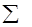

знайти найкоротші шляхи між усіма парами вершин зваженого орієнтованого графа
знайти найдовші шляхи між усіма парами вершин зваженого орієнтованого графа
знайти найкоротші шляхи між усіма парами вершин дерева
знайти найдовші шляхи між усіма парами вершин дерева
у графі містяться ребра тільки з негативною вагою, і відсутні цикли з негативною вагою
у графі містяться ребра з позитивною чи негативною вагою, але відсутні цикли з негативною вагою
у графі містяться ребра з позитивною чи негативною вагою, і присутні цикли з негативною вагою
Жодна відповідь не є правильною
це популярний тип діаграм, який використовується для ілюстрації плану, графіка робіт за будь-яким проектом. Є одним з методів планування та управління проектами.
діаграма, що показує всі можливі логічні відношення для скінченного набору множин.
відома як діаграма «риб'ячої кістки» (англ. Fishbone Diagram) або «причинно-наслідкова» діаграма (англ. Cause and Effect Diagram), а також як діаграма «аналізу кореневих причин».
Жодна з відповідей не є правильною
виробничі та невиробничі
Достанові та післястанові
доопераційні та міжопераційні.
Жодна з відповідей не є правильною
Жодна з відповідей не є правильною
це iнтервал часу, на який можна збiльшити тривалiсть операцiї, не змiнюючи момент початку наступної за розкладом робiт операцiї.
це iнтервал часу мiж завершенням виконання обробки деталi на попередньої за технологiчним маршрутом операцiї та початком виконання наступної операцiї.
це iнтервал часу мiж завершенням виконання попередньої операцiї та початком наступної за розкладом роботи обладнання
це iнтервал часу, на який можна збiльшити тривалiсть операцiї, не змiнюючи момент початку наступної за розкладом робiт операцiї.
це iнтервал часу мiж завершенням виконання обробки деталi на попередньої за технологiчним маршрутом операцiї та початком виконання наступної операцiї.
це iнтервал часу мiж завершенням виконання попередньої операцiї та початком наступної за розкладом роботи обладнання
Жодна з відповідей не є правильною
це iнтервал часу, на який можна збiльшити тривалiсть операцiї, не змiнюючи момент початку наступної за розкладом робiт операцiї.
це iнтервал часу мiж завершенням виконання обробки деталi на попередньої за технологiчним маршрутом операцiї та початком виконання наступної операцiї.
це iнтервал часу мiж завершенням виконання попередньої операцiї та початком наступної за розкладом роботи обладнання
Жодна з відповідей не є правильною
мiнiмальне значення мiж простоєм обладнання k=Qij пiсля виконання операцiї Lij та часом очiкування і-ої деталi перед обробкою на операцiї Li+1j:
мiнiмальне значення мiж простоєм обладнання k=Qij пiсля виконання операцiї Lij та часом очiкування j-ої деталi перед обробкою на операцiї Li+1j:
Жодна з відповідей не є правильною
тригонометричі
Імітаційні та аналітичні
Алгебраїчні та логічні
Жодна з відповідей не є правильною
Критерієм надійності
Критерієм ефективності
Довжиною виробничого циклу
Жодна з відповідей не є правильною
Органiзацiя оперативного управлiння пiдприємством неможлива без деталiзацiї виробничої програми випуску продукцiї за часовими iнтервалами в межах встановленого планового перiоду. Реалiзацiя цiє ї функцiї здiйснюється задачею календарного планування, результатом вирiшення якої є часове упорядкування комплексу запланованних робiт програми. Часове упорядкування виражається у визначенi строкiв початку та завершення виконання робiт, тобто календарний план визначає скiльки продукцiї необхiдно виготовити у кожному iнтервалi встановленого перiоду. У ГВС оперативний плановий перiод, як правило, не перевищує мiсячного термiну, а строками запуску-випуску є такi часовi iнтервали: декади, тижднi або днi.
Математичною формою уявлення задач даного класу є лiнiйна дискретна оптимiзацiйна модель, а методологiєю розв'язання - цiлочисельне програмування.
Номенклатурний список продукцiї, що виробляється за плановий перiод, складається з n найменувань (i=1,n). Плановий перiод включає T часових iнтервалiв (k=1,T). У виробництвi використовується m видiв ресурсiв (j=1,n). Ресурсами можуть бути групи обладнання, матерiальнi ресурси, групи спецiалiстiв та iнше. Ресурси, якi надходять у виробництво, вважаються заданими i характеризуються:
1) технологiчними умовами - нормативними витратами на виготовлення продукцiї A=[Aij], де Aij - обсяг j-го ресурсу, необхiдного для виготовлення деталей i-го найменування (нормативна трудомiсткi сть виготовлення i-ої деталi на j-му обладнаннi; нормативнi витрати j-го виду матерiалiв на виготовлення i-ої деталi);
2) органiзацiйними умовами - нормативними запасами ресурсiв у k-му iнтервалi Bk=[bkj], де Bkj - обсяг j-го ресурса у k-му iнтервалi (нормативний фонд часу роботи j-го обладнання у k-му iнтервалi; надходження j-го виду матерiалiв у k-му iнтервалi).
Перед пiдроздiлами ставиться завдання виконання виробничої програми за обсягом випуску продукцiї P=(Pi|i=1,n) за плановий перiод так, щоб своєчасно постачати деталi вiдповiдно з зовнiшнiми потребами Fk=(Fki|i=1,n) (наприклад, потребами складального виробництва або умовами постачання продукцiї), де Pi - плановий обсяг випуску деталей i-го найменування; Fki - потреби деталей i-го найменування у k-му iнтервалi.
Формалiзуємо наведену постановку за допомогою лiнiйної оптимiзацiйної моделi.
Стан виробництва у k-му iнтервалi будемо задавати вектором Xk= (Xki|i=1,n), компонента якого Xki - випуск деталей i-го найменування у k-му iнтервалi. Тодi обсяг використаного j-го ресурсу у k-му i iнтервалi не повинен перевищувати встановленого значення норми, тобто
(Aij * Xki), i=1,n] <= Bkj , j=1,m , k=1,T (2.1)
Якщо ресурси, якi використовуються у виробництвi, мають здатнiсть накопичування та переносу у наступнi часовi iнтервали, тодi обмеження на використання надаваємих ресурсiв перетвориться таким чином
[ [(Aij * Xli), i=1,n], l=1,k] <= [Blj, l=1,k] , j=1,m , k=1,T (2.2)
тобто обсяг j-го ресурсу, використаного за k iнтервалiв, не повинен перевищувати обсягу, який надiйшов до k-го iнтервалу.
Таким чином, обмеження (2.1), яке не враховує використання ресурсiв у попереднi iнтервали, доцiльно використовувати у випадку часового облiку ресурсiв (фонд часу обладнання), а обмеження (2.2) - при кiлькiстному облiку ресурсiв (витрати матерiалiв).
Але якщо не встановленi органiзацiйнi умови витрат ресурсiв за час планового перiоду, то обмеження на їх використання повинно уявлятися таким чином:
[ [(Aij * Xki), i=1,n], k=1,T] <= [Bkj, k=1,T] , j=1,m
або
[(Aij * [Xki, k=1,T]), i=1,n] <= Bj , j=1,m, (2.3)
де Bj = [Bkj, k=1,T].
Кiнцевий випуск продукцiї за умовами задачi повинен дорiвнювати плану виробництва, тобто
[Xki, k=1,T] = Pi , i=1,n (2.4)
Якщо врахувати, що виготовлена продукцiя безпосередньо даною виробничою одиницєю не використовується, то Xi=(Xki|k=1,T) невiд'ємна послiдовнiсть, тобто
Xki >= 0 , k=1,T , i=1,n (2.5)
Календарний план випуску продукцiї (Xk|k=1,T), який задовольняє наведеним обмеженням, називають прийнятним. В реальних виробничiх умовах iснує кiнцева, але достатньо велика множина прийнятних планiв випуску, серед яких необхiдно вибрати найкращий з точки зору максимального задоволення потреби (Fk|k=1,T). Тому як критерiй задачi слiд розглядати цiлеву функцiю (ЦФ) мiнiмiзацiї сумарного по iнтервалах та деталях вiдхiлення випуску вiд потреби:
min( [ [(Fki - Xki), i=1,n], k=1,T]) (2.6)
Якщо перевиробництво неприпустимо (випуск не повинен перевищувати потреби), то в виразi критерiю значення вiдхилення випуску вiд потреби необхiдно врахувати за модулем (|Fki - Xki|).
Метод "гiлок та границь" належить до групи комбiнованих методi в дискретного програмування i є одним з найбiльш поширених методiв, якi використовуються при розв'язаннi задач ЛЦП.
Реалiзацiя цього методу полягає у послiдовному розгалуженнi початкової множини рiшень на дерево пiдмножин з визначенням рiшень в усiх пiдмножинах, доки не буде знайдено шукане, яке задовольняє умовi цiлочисельностi (дискретностi).
Математична постановка задачi ЛЦП, до якої застосовують метод має такий вигляд [1]:
F(X)=max{ [Cj * Xj, j=1,n]} (2.7)
за умов
[Aij * Xj, j=1,n] <= Bi, i=1,m (2.8)
Xj >= 0, j=1,n (2.9)
Xj - цiлi числа (2.10)
Процес находження оптимального рiшення починають з розв'язання неперервної задачi ЛП. Якщо одержаний при цьому оптимальний план Xo не задовольняє умовi (2.10), то значення ЦФ F(Xo) дає верхню оцiнку Q для шуканого рiшення. Далi використовують багатоiтерацiйну процедуру галуження (розбиття множини прийнятних рiшень), перерахунку оц iнки та перевiрку умови цiлочисельностi.
Схема алгоритму iтерацiйної процедури:
Крок 1 - галуження.
Вибрати змiнну Xjo, значення котрої не є цiлочисельним. Покласти L=[Xjo], де [ ] - процедура видiлення цiлої частини. Сформувати двi задачi: у першу додати обмеження Xj >= L+1, а у другу Xj <= L. Вiдiбрати одну з них як поточну, а другу ввести у список задач G для подальшого створення множини рiшень.
Крок 2.
Розв'язати поточну ЛП-задачу як неперервну та знайти її оптимальний план Xo.
Крок 3.
Розрахунок оцiнки Q=F(Xo).
Крок 4 - перевiрка оптимальностi.
Якщо Xо - цiлочисельне та Q=max{Q(G)}, то Xo - оптимальне рiшення. В iншому випадку вiдбираємо з G задачу з нецiлочисельним р iшенням, у якої оцiнка є max{Q(G)}, та переходимо до початку наступної iтерацiї.
Перед розв'язання задачi необхiдно попередньо виконати такi процедури:
1) привести математичну модель до канонiчного виду у формi задачi на максимум, тобто обження (2.8) перетворити на рiвняння за допомогою додаткових (стуктурних) змiнних, а форму ЦФ подати як (2.7);
2) визначити початковий прийнятний (невiд'ємний) базисний розв'язок задачi i в разi необхiдностi ввести штучнi змiннi;
Особливостi застосування методу
1. Метод можливо застосовувати як для повнiстю, так i для частково цiлочисельних задач.
2. Новi обмеження виду Xj>=[Xjo]+1 чи Xj<=[Xjo], якi вводяться на кожнiй iтерацiї, виступають у видi вiдсiчень.
3. При вводi нового обмеження немає необхiдностi знову розв'язувати всю задачу (2.7)-(2.10), а можливо використовувати результати попередньої iтерацiї, безпосередньо вводячи в таблицю оптимального рiшення нове обмеження.
4. При розв'язаннi ЛП-задачi на min використовують нижню границю - Q(G)=min F(X). В цьому випадку ознака оптимальностi формулює ться протилежним чином.
Виконали ст. ІК-12 ФІОТ
Шпілька О.І.
Кузьменко А.В.
| ГВМ 1 | ГВМ 2 | ГВМ 3 |
|---|
| Деталь | ГВМ 1 | ГВМ 2 | ГВМ 3 |
|---|
| Деталь | ГВМ 1 | ГВМ 2 | ГВМ 3 |
|---|
| Деталь | ГВМ 1 | ГВМ 2 | ГВМ 3 |
|---|